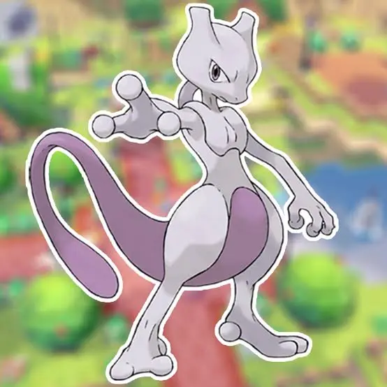
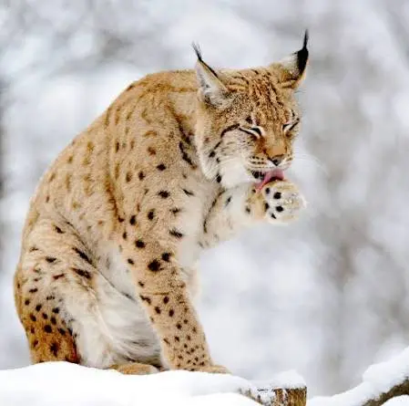

Karvinen
Elinympäristö:
Karvinen asuu Eskon kotona, jossa hän viettää suurimman osan ajastaan. Hän viihtyy erityisesti sohvalla ja paikoissa, joissa voi rentoutua.
Ravinto:
Karvisen lempiruokaa on lasagne. Hän pitää myös pizzasta ja monista muista ruoista. Ruoka on yksi hänen elämänsä tärkeimmistä asioista.
Elintavat:
Karvinen tykkää nukkua, syödä ja laiskotella. Hän ei pidä liikunnasta eikä maanantaista. Hän viettää aikaa omistajansa Eskon ja koira Oskun kanssa.
Erityispiirteet:
Karvinen on oranssi raidallinen kissa, joka tunnetaan sarkastisesta huumoristaan, laiskuudestaan ja suuresta ruokahalustaan. Hän on älykäs ja osaa ilmaista mielipiteensä varsin selvästi.
Kysy lisää
Mewtwo

Elinympäristö:
Mewtwo on Pokémon-maailman fiktiivinen hahmo, joka on luotu geenitutkimuksen avulla. Tarinoissa se esiintyy muun muassa laboratorioissa ja syrjäisissä paikoissa, joissa se voi olla rauhassa.
Ravinto:
Mewtwon tarkkaa ravintoa ei ole määritelty Pokémonin virallisissa perustiedoissa. Sen ravinnosta ei kerrota samalla tavalla kuin oikeiden eläinten ravinnosta.
Elintavat:
Mewtwo on voimakas ja älykäs Pokémon, joka viihtyy usein omissa oloissaan. Se pystyy käyttämään psyykkisiä voimiaan ja kommunikoimaan telepaattisesti. Se pohtii myös omaa alkuperäänsä ja tarkoitustaan.
Erityispiirteet:
Mewtwo on luotu Mew'n DNA:n avulla geenitutkimuksessa. Se on psyykkinen Pokémon, jolla on erittäin voimakkaat henkiset kyvyt. Mewtwo pystyy liikuttamaan esineitä ajatuksen voimalla ja käyttämään voimiaan taistelussa.
Kysy lisää
Ilves

Elinympäristö:
Ilves elää metsissä lähes koko Suomessa. Se viihtyy erityisesti tiheissä ja vaikeakulkuisissa metsissä, louhikoissa ja mäkisillä alueilla. Ilves on arka eläin ja välttelee yleensä ihmisiä.
Ravinto:
Ilves on lihansyöjä. Sen ravintoon kuuluvat esimerkiksi jänikset, metsäkauriit, porot, linnut ja pienet jyrsijät. Se saalistaa yleensä vaanimalla ja yllättämällä saaliinsa.
Elintavat:
Ilves on yleensä yksineläjä ja liikkuu eniten hämärällä ja yöaikaan. Päivisin se lepää rauhallisissa paikoissa. Ilves on taitava saalistaja, joka liikkuu hiljaa ja käyttää tarkkaa näkö- ja kuuloaistiaan.
Erityispiirteet:
Ilveksellä on täplikäs turkki, lyhyt häntä, mustat korvatupsut ja suuret tassut. Tassut helpottavat liikkumista lumessa. Ilves on Suomen ainoa luonnonvarainen kissaeläin.
Kysy lisää